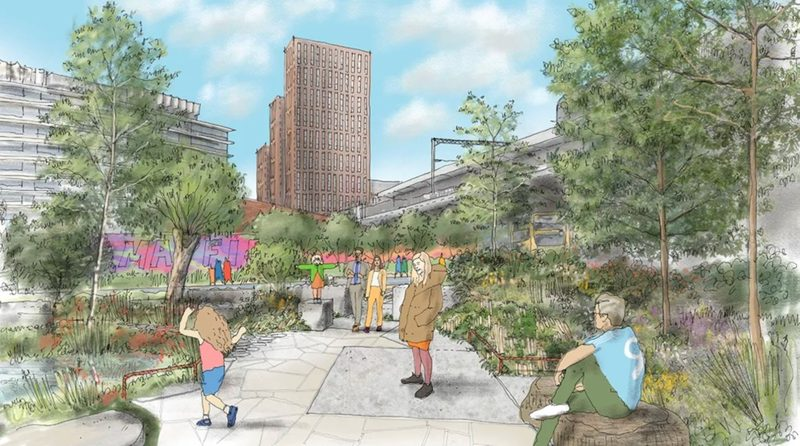
Manchester’s finest
Open every day 05:00 – 21:00
A public 7.5-acre park, with 161 trees, 134,000 shrubs and plants. The park features a kids’ play yard with 6 slides woven around the newly daylighted River Medlock – one of Manchester’s founding rivers. Made possible by the Mayfield Partnership.
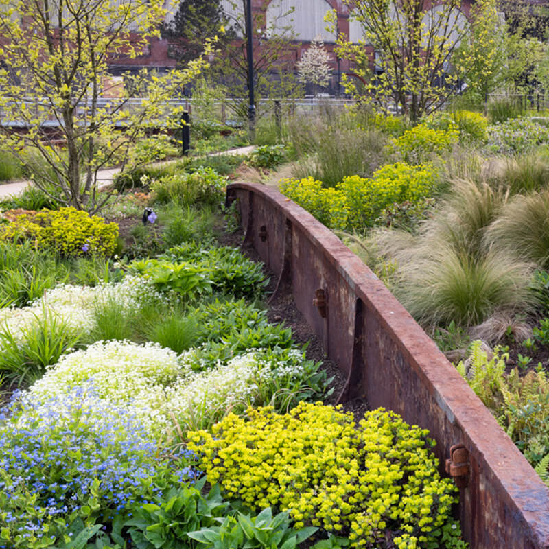
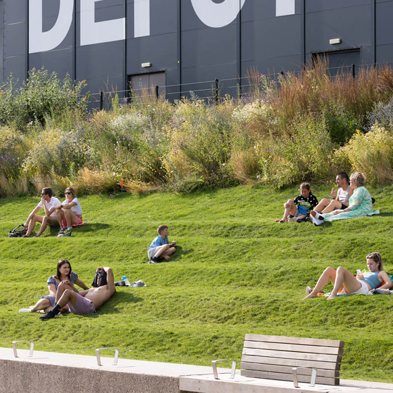
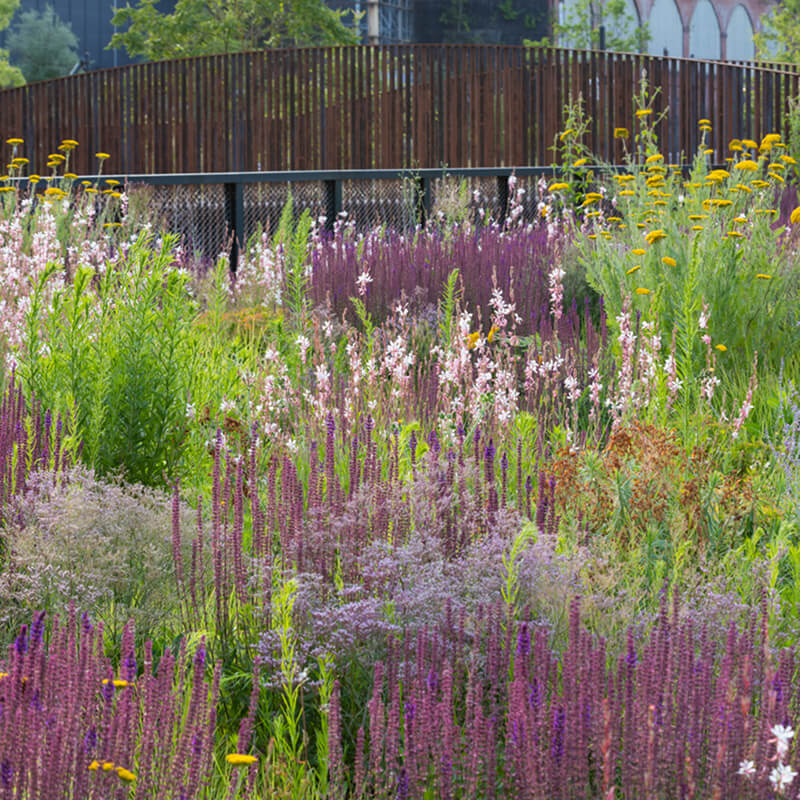
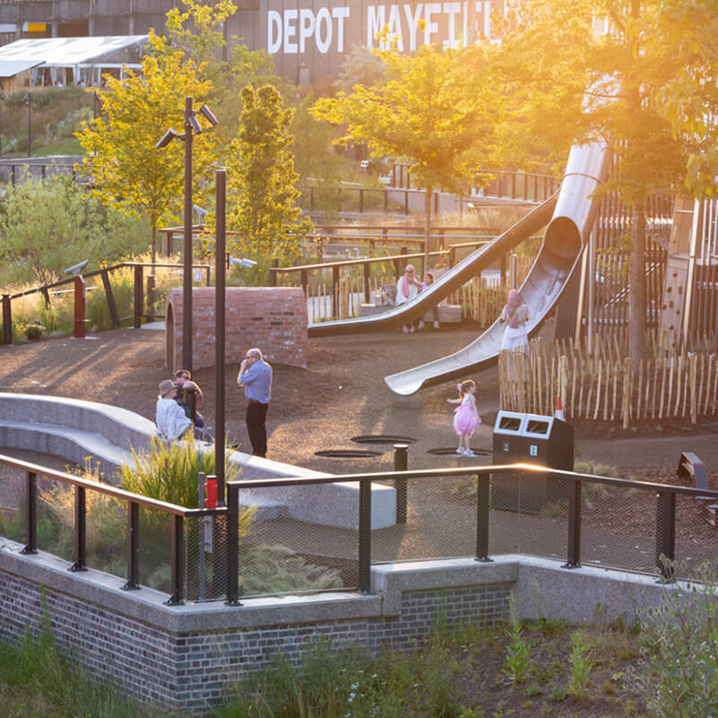
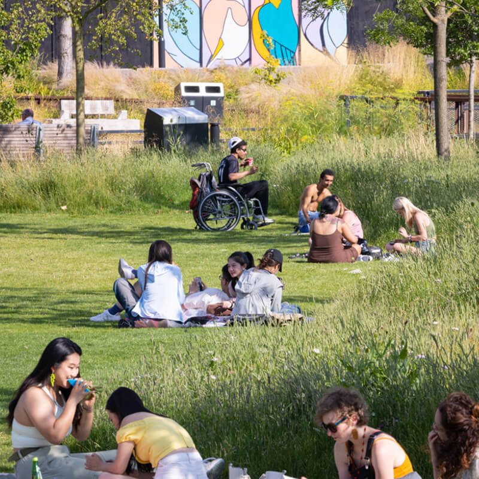
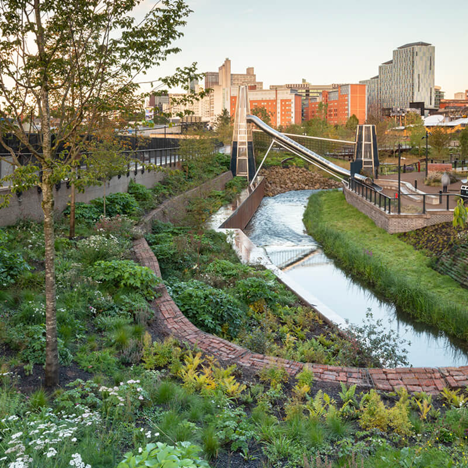
I really like the fact that this was a brownfield site, a printing works, it was a railway siding and you’ve got the river running through it, and it’s combined all that to make something that people obviously love
Manchester has a new green heart
This is the park of the future

Manchester’s finest
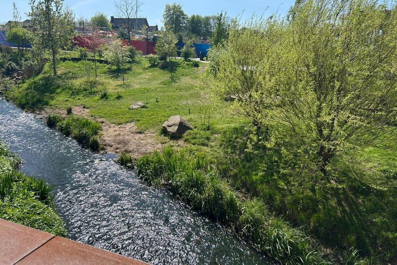
Manchester Evening News
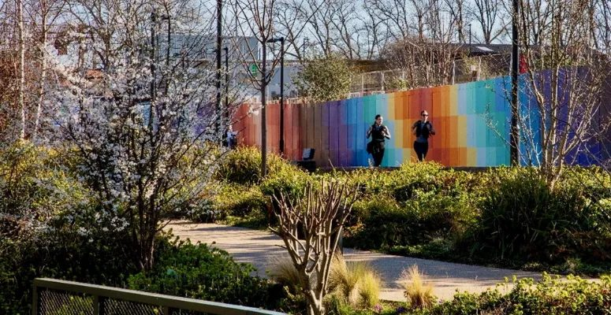
Pro Landscaper Magazine
Boardman Gate Entrance, Mayfield Park, Baring Street, Manchester M1 2PY
View on Google Maps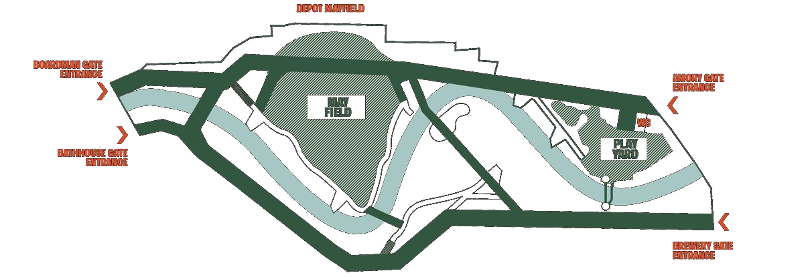
The 7.5-acre park will sit at the heart of a new neighbourhood, with the uncovered River Medlock running through the middle. Different landscaped spaces each have their own character and amenities. The lawn space can be used for events, a children’s play yard, a quiet contemplation zone, a wildscape for biodiversity, and multiple routes of walkways.
Mayfield Park has been designed as a “sequence of spaces”, the west end of the park (nearest the Baring Street entrance) is landscaped with seating areas; whereas, towards the east, the park becomes more urban with planting and increased habitat provision for wildlife.
There are toilets available at Mayfield Park next to the Play Yard. These toilets are accessible for all and include a baby changing unit. There are also water refill stations available around the park. If you require any assistance, you can ask one of our security team members who will be happy to help.
Yes! Dogs are of course welcome in Mayfield Park. However, your furry friend must be kept under control at all times. Dogs are not permitted in the Play Yard.
Since June 2023, Mayfield Park has been smokefree. Smoking and vaping in the park is prohibited.
You are welcome to picnic in Mayfield Park, however please be aware, the following are prohibited:
The park closes after sundown each night.
Yes, for personal use. Tag us in your Instagram posts @mayfieldmanchester! For any commercial filming and photography, please contact our Estate Management team.
Mayfield Park is a green lung for Manchester, as the city’s first new park in over 100 years. A diverse mix of plant and tree species have been incorporated into the landscape design, with over 300 trees planted across the neighbourhood to facilitate carbon capture. Wildflowers and wetland planting also encourage biodiversity.
The River Medlock has been uncovered and rejuvenated, creating a new habitat for wildlife. The park contains a number of new measures to support biodiversity, including kingfisher posts, bat bricks, and bird boxes. Many species are already returning to Mayfield, including fish and birds!
Whenever possible, existing materials and structures have been reused and recycled across Mayfield. The site has a unique industrial heritage that will be celebrated and revived to form a place for the future rooted in its past. The cavernous Depot building, railway arches and three bridges have been retained, and historic details such as the Mayfield Baths tiles preserved and saved for use elsewhere on site. Materials have also been sourced locally to minimise the environmental impact of the development and construction process.
13 wells, artefacts from the Victorian era, were unearthed throughout the construction process. Three of these are still functional and will be used to irrigate the plants and trees throughout the park, each pumping up to 20 cubic metres of water per day. The largest of these was used to supply the former Britannia Brewery, which was based on the east of the site in the late 19th and early 20th Century.
Initially, the Mayfield Partnership will take responsibility for the overall management of the park, with specialist contractors appointed to maintain it daily.
The park sits within the wider Mayfield neighbourhood. In the future there will be new homes, offices, retail and leisure space around the 7.5-acre park.
Yes, the park has been designed so that progress on the wider neighbourhood can continue with minimal disruption to activities within the park. The health and safety of visitors is of highest priority and clear procedures and protocols will be in place to ensure any construction works are at a safe distance.
Depot Mayfield will continue to host a wide range of events and activations including Escape to Freight Island and the Warehouse Project. In the long term a more permanent reuse of the former train station/Depot building(s) will be decided as part of the final phase of the 10-year development of Mayfield.
Mayfield Park is private land. There are no public rights of way over it. The public is however currently permitted by the owner to have non-vehicular access over such routes as the owner may designate from time to time subject to complying with any terms of access that the owner may impose from time to time. Mayfield Development (General Partner) Limited
#mayfieldmcr
Follow Mayfield to get the latest updates on what’s on in the district and share your photos with the hashtag #MayfieldMCR
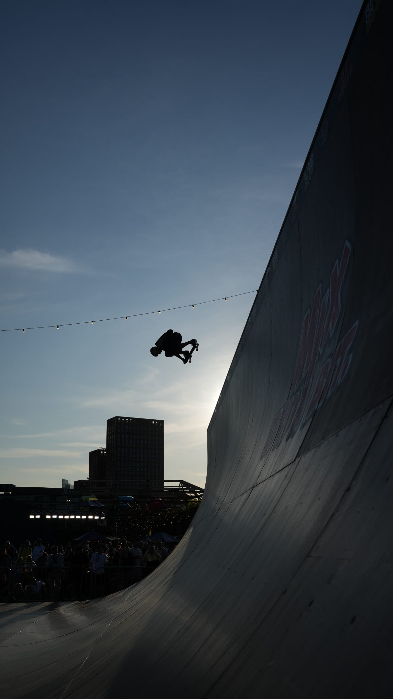
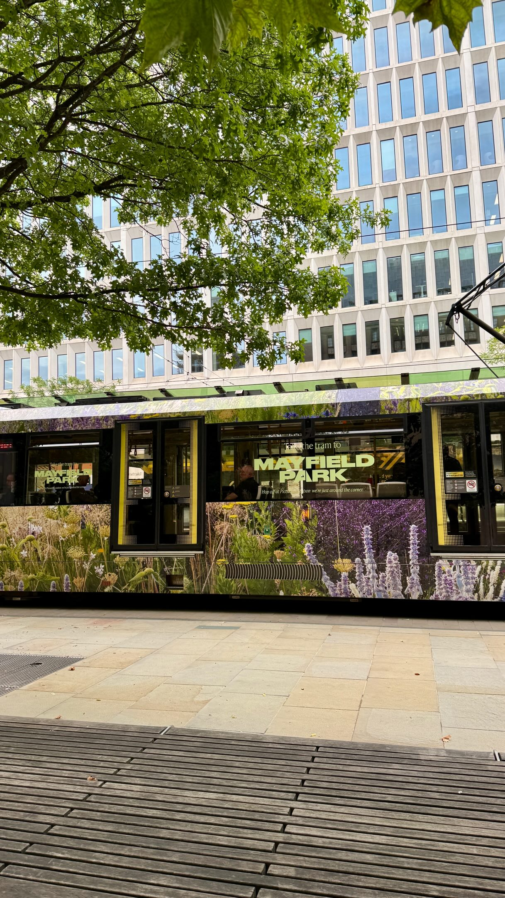
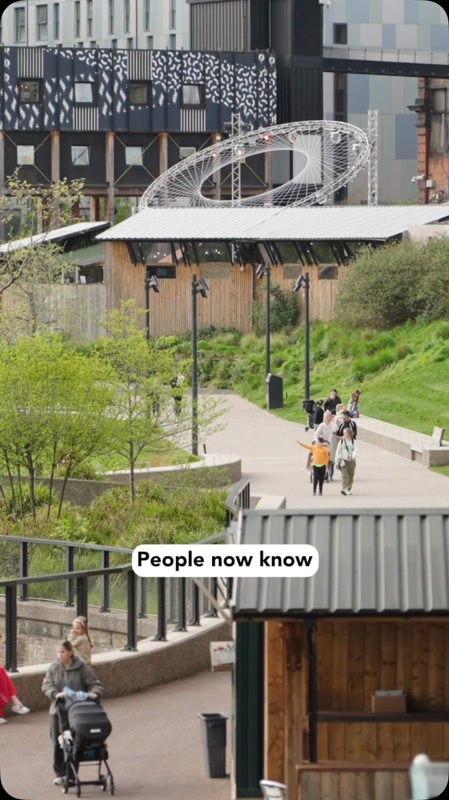
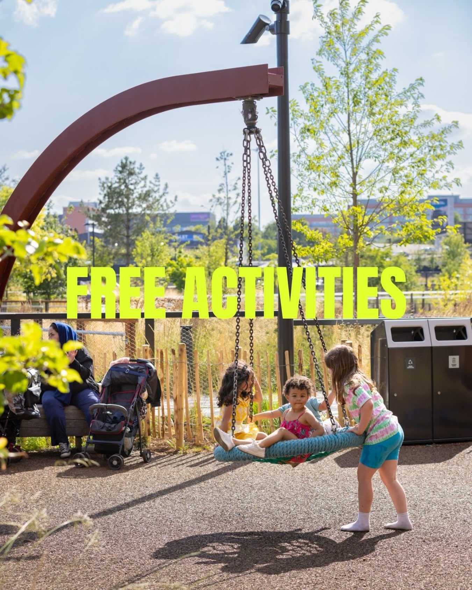